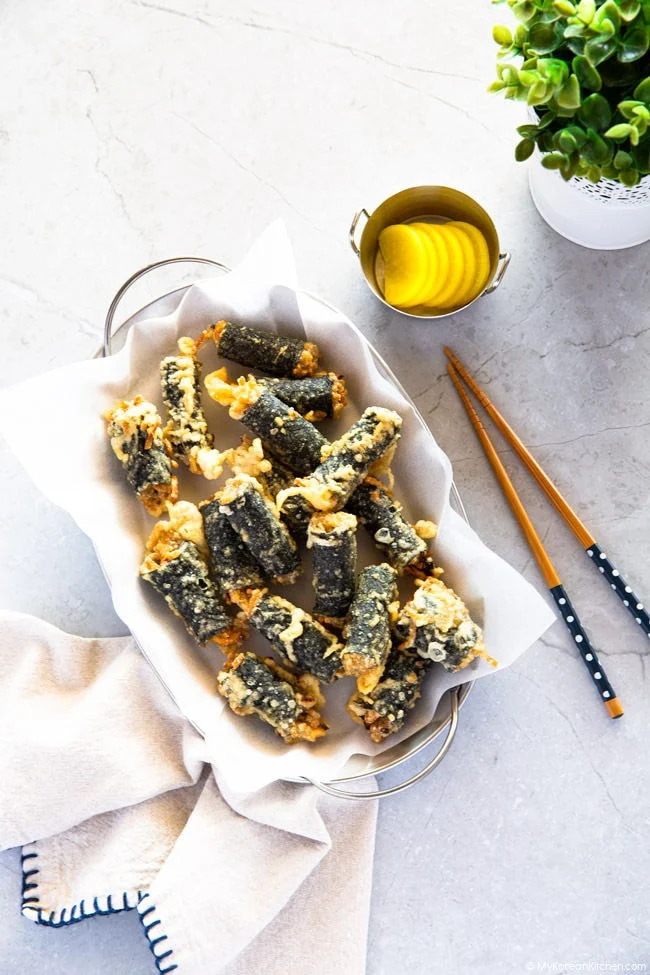

Gimmari 김말이

Description
Gimmari (김말이) is a type of food that is made with dried seaweed gim, glass noodles and optional vegetable ingredients (e.g. garlic chives or carrots).
To make this dish, a simple version of Korean japchae noodles are rolled up in a dried seaweed sheet. It is then coated with frying batter and deep-fried. If you have some leftover Korean japchae, gimmari is a great way to use it up.
Gimmari is crispy on the outside and slightly chewy on the inside, and it goes wonderfully well with spicy rice cakes called tteokbokki.
Ingredients (makes 18 servings)
Main
- 3 dried seaweed sheets , cut in halves (longways)
- 115 g Korean glass noodles
- 45 g carrot
- 10 g garlic chives
- Cooking oil for deep frying
Sauce
- 1 tbsp soy sauce
- 1 tsp fine sea salt
- 1/4 tsp sesame oil
- A few sprinkles ground black pepper
Batter
- 1 cup potato starch
- 3/4 cup water
- 1 Tbsp cooking oil
- 1 egg white, sifted
Steps
- Soak the glass noodles in a large bowl for 10 minutes to soften them, then boil for 5 minutes on medium high heat. Drain the noodles and wash with cold water, then set aside for 5 to 10 minutes to let the water drain off. Transfer the noodles into a medium-sized bowl and cut the noodles into little finger-sized pieces. Set aside.
- Prepare a medium size bowl and add the potato starch and water to make the batter for frying. Once you have added these ingredients, use a spatula to gently flatten the starch. It is important that you do not mix or whisk at this time. Instead, leave it on the kitchen bench while you prepare the other ingredients. This will allow the water and starch to separate, which will take approximately 10 to 20 minutes.
- Once the starch and water have been separated, get rid of the water (the last part of the water includes a bit of starch but it’s okay to discard it). Combine the starch sediment with the cooking oil and egg whites. Mix them well until the texture is smooth (It will be stiff at first, so you might need to use a fork or equivalent tool to mix.). Set it aside.
- Combine the sauce ingredients in a small bowl and mix well. Add carrots, garlic chives and the sauce into the noodle bowl (from step 1). Mix them well with your hands.
- To make seaweed rolls, first halve the seaweed sheet. Then, place a small amount of glass noodle and vegetable mixture onto the seaweed sheet, covering about two-thirds of the sheet. Next, roll the seaweed up. If needed, wet the top of the seaweed with some water to glue it down. Set aside. Repeat this process with the remaining ingredients.
- Cut the rolled seaweed with the scissors into 3 even sized pieces.
- Fill a fryer or deep wok with a generous amount oil and bring it to a boil. The oil is ready when it reaches 175 degrees Celsius or 350 degrees Fahrenheit. It should take about five minutes for the oil to reach this temperature. Before using the batter from step 3, give it a good stir. Then, one at a time, coat the seaweed rolls in the batter bowl then add the battered seaweed rolls into a fryer. Fry them until they’re fully cooked (1-2 minutes).
Do not crowd the fryer while frying – this will make it more difficult to monitor the cooking process. Also, batter coated seaweed rolls tend to stick while floating around in the hot oil, so carefully separate them with a pair of deep fryer chopsticks. Take the fried seaweed rolls out and put them onto a kitchen paper towel to soak off any excess oil. Repeat this process until all seaweed rolls are fried.
- For extra crispiness, fry the seaweed rolls a second time for 30 seconds to 1 minute. Set aside.
- Serve.
Additional Recipes